리눅스마스터-2급 (2022-06-11 기출문제)
1과목: 리눅스 운영 및 관리
1. 다음 중 예약된 프린터 작업을 취소하는 명령으로 알맞은 것은?
- lpr
- lpq
- cancel
- lpstat
(정답률: 87%)

2. 다음 중 스캐너를 사용하기 위해 설치해야 하는 패키지로 알맞은 것은?
- LPRng
- ALSA
- CUPS
- XSANE
(정답률: 81%)
3. 다음 RAID 구성 레벨 중에서 디스크 오류 대처와 가장 거리가 먼 것은?
- RAID-0
- RAID-1
- RAID-5
- RAID-6
(정답률: 84%)
4. 다음 중 사운드 카드와 관련된 조합으로 알맞은 것은?
- OSS, CUPS
- ALSAM CUPS
- OSS, SANE
- OSS, ALSA
(정답률: 83%)
5. 다음 유닉스에서 사용하는 프린팅 명령어 중 나머지 셋과 계열이 다른 것은?
- lp
- lpr
- lpq
- lprm
(정답률: 75%)
6. 다음 설명에 해당하는 LVM 용어로 알맞은 것은?
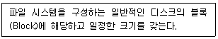
- PE
- PV
- LV
- VG
(정답률: 66%)
7. 다음 중 yum 명령을 이용해서 sendmail 패키지를 설치하는 명령으로 알맞은 것은?
- yum install sendmail
- yum -i sendmail
- yum -yl sendmail
- yum infol sendmail
(정답률: 85%)
8. 다음은 httpd 라는 이름의 rpm 패키지가 설치되어 있는지를 확인하는 과정이다. ( 괄호 ) 안에 들어갈 내용으로 알맞은 것은?
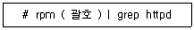
- -qa
- -qi
- -qd
- -ql
(정답률: 64%)
9. 다음 중 소스 파일로 프로그램 설치하는 방법이 나머지 셋과 다른 것은?
- MySQL
- Apache httpd
- PHP
- Nmap
(정답률: 80%)
10. 다음은 MySQL 소스 파일을 설치하기 위해서 압축을 푸는 과정이다. ( 괄호 ) 안에 들어갈 내용으로 알맞은 것은?
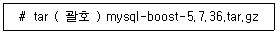
- gxvf
- zxvf
- jxvf
- Jxvf
(정답률: 70%)
11. 다음은 rpm 파일을 내려받아서 설치하는 과정이다. ( 괄호 ) 안에 들어갈 내용으로 알맞은 것은?
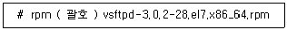
- -U
- -I
- -E
- -V
(정답률: 65%)
12. 다음 중 소스 파일로 프로그램을 설치하는 단계인 configure 작업 후에 생성되는 파일명으로 알맞은 것은?
- .config
- .configure
- make
- Makefile
(정답률: 72%)
13. 다음 중 온라인 기반 패키지 관리 도구로 틀린 것은?
- apt-get
- yum
- dpkg
- zypper
(정답률: 61%)
14. 다음 중 데비안 계열 리눅스의 패키지 관리 도구로 가장 거리가 먼 것은?
- dselect
- alien
- dpkg
- dnf
(정답률: 58%)
15. vi 편집기에서 표시되고 있는 행번호를 제거할 때 사용하는 환경 설정값으로 알맞은 것은?
- set uno
- set unnu
- set unno
- set nonu
(정답률: 69%)
16. 다음 중 가장 처음에 등장한 편집기로 알맞은 것은?
- vi
- gedit
- nano
- pico
(정답률: 73%)
17. 다음 중 vi 편집기에서 모든 windows라는 문자열을 linux로 치환하는 명령으로 알맞은 것은?
- :% s/linux/windows/g
- :% s/windows/linux/g
- :% s/\<linux\>/windows/g
- :% s/\<windows\>/linux/g
(정답률: 65%)
18. vi 편집기 실행할 때마다 행 번호가 자동으로 표시되도록 설정하려고 한다. 다음 중 관련 설정을 저장하기 위해 생성해야 할 파일명으로 알맞은 것은?
- .virc
- .vimrc
- .viex
- .vimex
(정답률: 63%)
19. 다음 ( 괄호 ) 안에 들어갈 내용으로 알맞은 것은?
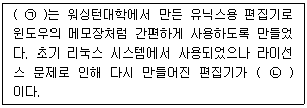
- ㉠ vi, ㉡ pico
- ㉠ vi, ㉡ nano
- ㉠ nano, ㉡ pico
- ㉠ pico, ㉡ nano
(정답률: 75%)
20. 다음 중 emacs 편집기를 종료하는 조합으로 알맞은 것은?
- [Ctrl]+[c] 후에 [Ctrl]+[x]
- [Ctrl]+[x] 후에 [Ctrl]+[c]
- [Ctrl]+[c] 후에 [Ctrl]+[f]
- [Ctrl]+[x] 후에 [Ctrl]+[f]
(정답률: 64%)
21. 다음 중 백그라운드로 실행시킨 프로세스를 확인하는 명령어로 알맞은 것은?
- job
- jobs
- fg
- bg
(정답률: 79%)
22. 다음 설명에 해당하는 용어로 가장 알맞은 것은?
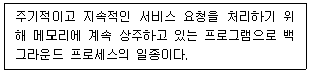
- init
- inetd
- standalone
- daemon
(정답률: 78%)
23. 다음 중 실시간으로 CPU 사용량을 확인할 때 이용하는 명령어로 알맞은 것은?
- top
- pgrep
- nohup
- free
(정답률: 82%)
24. 다음 중 현재 실행 중인 포어그라운드 프로세스의 작업을 백그라운드 프로세스로 전환하기 위해 사용하는 키 조합으로 알맞은 것은?
- [ctrl]+[z]
- [ctrl]+[c]
- [ctrl]+[l]
- [ctrl]+[d]
(정답률: 72%)
25. 다음 중 [ctrl]+[c] 키 조합으로 발생하는 시그널의 번호 값으로 알맞은 것은?
- 1
- 2
- 15
- 20
(정답률: 58%)
26. 작업번호가 2번인 백그라운드 프로세스를 종료하려고 한다. 다음 ( 괄호 ) 안에 들어갈 내용으로 알맞은 것은?
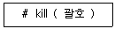
- 2
- &2
- +2
- %2
(정답률: 54%)
27. 프로세스아이디(PID)가 1222인 bash 프로세스의 우선순위(NI)값이 0이다. 다음 중 이 프로세스의 NI값을 –10으로 변경하여 우선순위를 높이는 명령으로 알맞은 것은?
- nice –10 1222
- nice –-10 1222
- nice –10 bash
- nice –-10 bash
(정답률: 55%)
28. cron을 이용해서 해당 스크립트를 매주 월요일 오전 10시 2분에 주기적으로 실행하려고 한다. 다음 ( 괄호 ) 안에 들어갈 내용으로 알맞은 것은?
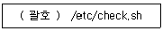
- 1 10 * * 2
- 2 10 * * 2
- 1 10 * * 1
- 2 10 * * 1
(정답률: 79%)
29. 다음 중 백그라운드로 실행시킨 프로세스의 우선순위값을 확인하는 명령으로 알맞은 것은?
- jobs -p
- jobs -l
- ps aux
- ps –l
(정답률: 48%)
30. 다음 ( 괄호 ) 안에 들어갈 내용으로 알맞은 것은?
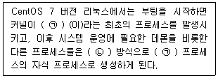
- ㉠ init, ㉡ exec
- ㉠ init, ㉡ fork
- ㉠ systemd, ㉡ exec
- ㉠ systemd, ㉡ fork
(정답률: 66%)
31. 다음 중 GNU 프로젝트의 일환으로 만들어진 셸로 알맞은 것은?
- ksh
- bash
- dash
- csh
(정답률: 78%)
32. 다음은 환경변수를 이용해서 로그인 셸을 확인하는 과정이다. ( 괄호 ) 안에 들어갈 내용으로 알맞은 것은?
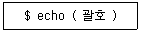
- $HOME
- $SHELL
- $LOGIN
- $TERM
(정답률: 80%)
33. 다음 중 선언된 셸 변수를 확인하는 명령으로 가장 알맞은 것은?
- chsh
- set
- unset
- env
(정답률: 67%)
34. 다음 중 현재 시스템에서 사용 가능한 셸의 정보를 저장하고 있는 파일로 알맞은 것은?
- /etc/shells
- /etc/bashrc
- /etc/passwd
- /etc/profile
(정답률: 75%)
35. 다음 중 ls 명령어에 설정된 에일리어스(alias)를 해제하는 명령으로 알맞은 것은?
- alias ls
- alias –c ls
- ualias ls
- unalias ls
(정답률: 75%)
36. 다음은 root 권한으로 ihduser 사용자가 실행한 명령의 목록 정보를 확인하는 과정이다. ( 괄호 ) 안에 들어갈 내용으로 가장 알맞은 것은?
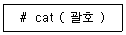
- ~ihduser/.history
- ~ihduser/.profile
- ~ihduser/.bash_history
- ~ihduser/.bash_profile
(정답률: 59%)
37. 다음 중 셸에서 실행 후 저장되는 history 개수를 확인할 수 있는 환경변수명으로 알맞은 것은?
- HISTORY
- HISTORYSIZE
- HISTSIZE
- HISTFILESIZE
(정답률: 67%)
38. 다음 중 ihduser 사용자의 로그인 셸을 확인하는 명령으로 알맞은 것은?
- chsh ihduser
- chsh –l ihduser
- grep ihduser /etc/passwd
- grep ihduser /etc/shells
(정답률: 60%)
39. 다음 중 파일이나 디렉터리의 허가권 값을 변경하는 명령으로 알맞은 것은?
- chmod
- chgrp
- umask
- chown
(정답률: 71%)
40. 다음은 마운트된 /backup 영역을 마운트 해제하는 과정이다. ( 괄호 ) 안에 들어갈 명령어로 알맞은 것은?
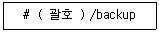
- umount
- unmount
- eject
- nohup
(정답률: 70%)
41. 다음 그림에 해당하는 명령어로 알맞은 것은?
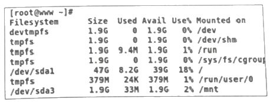
- du
- df
- mount
- fdisk
(정답률: 69%)
42. 다음 중 파일에 부여되는 허가권 값인 w에 대한 설명으로 알맞은 것은?
- 파일의 내용을 볼 수 있는 권한이다.
- 파일을 삭제할 수 있는 권한이다.
- 파일을 실행할 수 있는 권한이다.
- 파일의 내용을 수정할 수 있는 권한이다.
(정답률: 84%)
43. 다음은 data 디렉터리의 하위 디렉터리를 포함해서 디렉터리 내부의 모든 파일 및 디렉터리의 그룹 소유권을 kait로 변경하는 과정이다. ( 괄호 ) 안에 들어갈 내용으로 알맞은 것은?
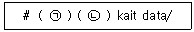
- ㉠ chown, ㉡ -r
- ㉠ chown, ㉡ -R
- ㉠ chgrp, ㉡ -r
- ㉠ chgrp, ㉡ -R
(정답률: 61%)
44. 다음은 /home 영역에 설정된 사용자 쿼터 정보를 확인하는 과정이다. ( 괄호 ) 안에 들어갈 명령어로 알맞은 것은?
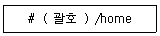
- quota
- edquota
- setquota
- repquota
(정답률: 42%)
45. 다음 중 /etc/fstab 파일에서 마운트되는 옵션 정보를 기록하는 필드는 몇 번째인가?
- 세 번째
- 네 번째
- 다섯 번째
- 여섯 번째
(정답률: 65%)
46. 다음 중 파티션에 할당된 UUID 값을 확인하는 명령어로 알맞은 것은?
- uuid
- lsuid
- blkid
- fdisk
(정답률: 66%)
47. 다음은 원격지의 윈도우 시스템에 공유된 폴더를 마운트하는 과정이다. ( 괄호 ) 안에 들어갈 내용으로 알맞은 것은?
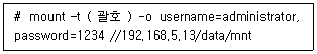
- ntfs
- cifs
- samba
- xfs
(정답률: 44%)
48. 허가권이 다음과 같이 설정되어 있을 때 관련 설명으로 가장 알맞은 것은?
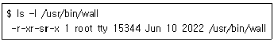
- tty 사용자가 실행 시에 일시적으로 root 권한을 갖는다.
- 실행시킨 사용자에 상관없이 일시적으로 root 권한을 갖는다.
- 실행시킨 사용자는 일시적으로 tty 그룹 권한을 갖는다.
- tty 그룹에 속한 사용자가 실행 시에만 일시적으로 root 권한을 갖는다.
(정답률: 53%)
2과목: 리눅스 활용
49. 다음 설명에 해당하는 클러스터 구성 방식으로 알맞은 것은?
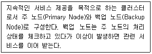
- 고계산용 클러스터
- 부하분산 클러스터
- HA(High Available) 클러스터
- HPC(High Performance Computing) 클러스터
(정답률: 72%)
50. 다음 설명에 해당하는 가상화 기술로 알맞은 것은?
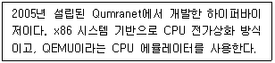
- KVM
- XEN
- VirtualBox
- Hyper-V
(정답률: 62%)
51. 다음 설명에 해당하는 명칭으로 알맞은 것은?
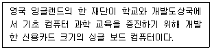
- 아두이노
- 라즈베리 파이
- 큐비보드
- 오드로이드
(정답률: 75%)
52. 다음 설명에 해당하는 프로그램으로 알맞은 것은?
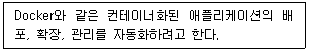
- GENIVI
- Ansible
- OpenStack
- Kubernetes
(정답률: 62%)
53. 다음 중 IP 주소 할당 및 도메인을 관리하는 국제기구로 알맞은 것은?
- ICANN
- IEEE
- ISO
- EIA
(정답률: 67%)
54. 다음 중 파일 전송 및 다운로드 진행 상태를 '#' 기호로 확인할 때 사용하는 FTP 명령어로 알맞은 것은?
- sharp
- mget
- bi
- hash
(정답률: 71%)
55. 다음 중 프로토콜과 포트번호 조합으로 틀린 것은?
- POP3 - 110
- IMAP - 143
- TELNET - 23
- SNMP – 151
(정답률: 63%)
56. 다음 중 UDP 프로토콜과 가장 관련 있는 서비스로 알맞은 것은?
- DNS
- TELNET
- SMTP
- HTTP
(정답률: 62%)
57. 다음 중 장애 발생 시에도 다른 시스템에 영향이 적어 가장 신뢰성이 높은 LAN 구성 방식으로 알맞은 것은?
- 링(Ring)형
- 버스(Bus)형
- 스타(Star)형
- 망(Mesh)형
(정답률: 80%)
58. 다음 중 루프백(Loopback) 네트워크가 속해 있는 IPv4의 클래스로 알맞은 것은?
- A 클래스
- B 클래스
- C 클래스
- D 클래스
(정답률: 64%)
59. 다음 중 메일 관련 프로토콜로 틀린 것은?
- POP3
- SMTP
- IMAP
- FTP
(정답률: 78%)
60. 다음 중 OSI 참조 모델을 제정한 기관으로 알맞은 것은?
- IEEE
- ISO
- ANSI
- EIA
(정답률: 75%)
61. 다음 중 프로토콜과 관련된 포트 번호를 확인할 수 있는 파일로 알맞은 것은?
- /etc/protocol
- /etc/hosts
- /etc/group
- /etc/services
(정답률: 58%)
62. 다음 중 IP 주소가 192.168.1.0인 경우에 사용되는 주소 체제로 가장 알맞은 것은?
- 네트워크 주소
- 게이트웨이 주소
- 서브넷 마스크 주소
- 브로드캐스트 주소
(정답률: 65%)
63. 다음 중 패킷 교환 방식에 대한 설명으로 틀린 것은?
- 전송 대역폭이 동적이다.
- 패킷마다 오버헤드 비트는 존재하지 않는다.
- 이론상 호스트의 무제한 수용이 가능하다.
- 모든 데이터가 같은 경로로 전송되지 않을 수도 있다.
(정답률: 70%)
64. 다음 중 OSI 7 계층 중 네트워크 계층과 가장 거리가 먼 프로토콜로 알맞은 것은?
- ICMP
- UDP
- IP
- ARP
(정답률: 62%)
65. 다음 중 OSI 7 계층 모델에서 데이터링크 계층이 제공하는 인접한 개방형 시스템 간에 데이터 전송기능을 이용하여 연결성과 통신 경로 선택(Routing)을 제공하는 계층으로 알맞은 것은?
- 전송계층
- 네트워크 계층
- 데이터링크 계층
- 물리 계층
(정답률: 66%)
66. 다음 중 게이트웨이(Gateway) 주소를 확인하는 명령어로 알맞은 것은?
- nslookup
- ifconfig
- arp
- route
(정답률: 53%)
67. 다음 중 네트워크 인터페이스의 물리적 케이블 연결 정보를 확인할 수 있는 명령어로 가장 알맞은 것은?
- arp
- ifconfig
- ethtool
- ss
(정답률: 71%)
68. 다음 중 netstat 명령을 이용하여 라우팅 테이블 정보를 출력할 때 사용하는 옵션으로 알맞은 것은?
- -t
- -m
- -n
- -r
(정답률: 59%)
69. 다음 설명에 해당하는 TCP 프로토콜의 패킷으로 알맞은 것은?
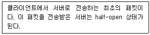
- RST
- SYN/ACK
- SYN
- ACK
(정답률: 69%)
70. 다음 중 MAN을 위한 국제 표준 규격인 IEEE 802.6로 정의된 프로토콜은?
- DQDB
- X.25
- FDDI
- Frame Relay
(정답률: 64%)
71. 다음 설명에 해당하는 명령으로 알맞은 것은?
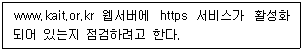
- telnet www.kait.or.kr@80
- ssh www.kait.or.kr@443
- ssh www.kait.or.kr:80
- telnet www.kait.or.kr 443
(정답률: 59%)
72. 다음 중 IPv4의 C 클래스 대역에 대한 설명으로 알맞은 것은?
- IP 주소 첫 번째 부분의 2비트가 10인 경우이다.
- IP 주소 첫 번째 부분의 2비트가 11인 경우이다.
- IP 주소 첫 번째 부분의 3비트가 110인 경우이다.
- IP 주소 첫 번째 부분의 3비트가 111인 경우이다.
(정답률: 75%)
73. 다음 중 텍스트 모드로 부팅된 상태에서 X 윈도를 실행하는 명령으로 알맞은 것은?
- xinit
- startx
- systemctl xinit
- systemctl startx
(정답률: 59%)
74. 다음 중 PDF 문서를 확인할 때 사용하는 프로그램으로 알맞은 것은?
- Gimp
- eog
- evince
- Gwenview
(정답률: 60%)
75. 다음 설명에 해당하는 라이브러리로 알맞은 것은?
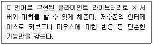
- Xlib
- XCB
- QT
- GTK+
(정답률: 62%)
76. 다음 중 스프레드시트(Spreadsheet) 프로그램으로 실행하는 명령으로 알맞은 것은?
- oocalc
- oowriter
- ooimpress
- oodraw
(정답률: 70%)
77. 다음 중 이미지 뷰어 프로그램으로 가장 거리가 먼 것은?
- Eog
- ImageMagicK
- Gimp
- Totem
(정답률: 74%)
78. 다음 설명에 해당하는 용어로 알맞은 것은?
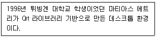
- KDE
- GNOME
- LXDE
- Wayland
(정답률: 63%)
79. 다음 ( 괄호 ) 안에 들어갈 명령어로 알맞은 것은?
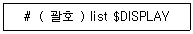
- xauth
- xhost
- xrandr
- export
(정답률: 53%)
80. 다음 중 시스템 시작 시 X 윈도 모드로 부팅하는 대신에 텍스트 모드로 부팅되도록 설정하는 명령으로 알맞은 것은?
- systemctl set-default multi-user.target
- systemctl set-default texmode.target
- systemctl set-default runlevel5.target
- systemctl set-default graphical.target
(정답률: 47%)